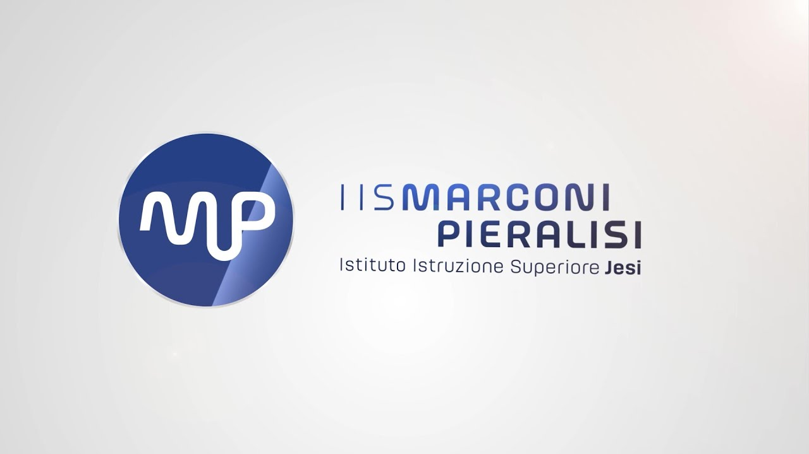

FSL / PCTO
Percorso per le Competenze Trasversali e l'Orientamento presso la Croce Verde di Ostra

L'azienda: Croce Verde Ostra
Ho svolto il mio percorso di FSL (ex PCTO) presso la Croce Verde di Ostra, con sede a Casine (AN). È un'associazione di pubblica assistenza fondamentale per il territorio, che si occupa di emergenza sanitaria e servizi sociali. È un ambiente dove l'organizzazione deve essere perfetta, poiché si ha a che fare con la salute delle persone e con situazioni critiche.
Il mio ruolo: Gestione Logistica e Operativa
Il mio compito non era legato allo sviluppo di software, ma alla gestione pratica della struttura. Mi sono occupato di attività amministrative e logistiche che permettono alla macchina del soccorso di funzionare senza intoppi.
Mansioni principali
Mi sono occupato di inserire a sistema l'inventario completo delle divise e dei DPI. È stato un lavoro di precisione, necessario per garantire che ogni operatore avesse sempre a disposizione l'equipaggiamento a norma.
Ho gestito le chiamate telefoniche e le richieste degli utenti, imparando a gestire la comunicazione in situazioni dove le persone possono essere ansiose o agitate.
Ho inserito a computer i "fogli di viaggio", ovvero i documenti compilati dai soccorritori dopo ogni uscita in ambulanza. Questo è fondamentale per la rendicontazione dei km e delle prestazioni dell'associazione.
Ho avuto modo di visionare la sala server dell'associazione insieme a un tecnico specializzato. È stato il momento in cui ho potuto applicare le mie conoscenze scolastiche di sistemi, vedendo come viene gestita la connettività e il backup dei dati in una struttura di emergenza.
Approccio al lavoro
Lavorare in Croce Verde mi ha sbattuto in faccia la realtà del mondo del lavoro. Ho imparato che bisogna saper vivere in un ambiente dove possono nascere problemi o tensioni tra colleghi e che, a volte, bisogna accettare anche ingiustizie o situazioni scomode con professionalità. Mi ha insegnato a stare al mio posto, a rispettare le gerarchie e a capire che il lavoro di squadra viene prima dei propri interessi personali.
Hard skills acquisite
- Gestione database per inventario logistico
- Utilizzo di software gestionali per il data entry
- Nozioni di infrastrutture IT in ambienti critici (sala server)
- Procedure di archiviazione documentale
Soft skills acquisite
- Capacità di gestire lo stress e le chiamate urgenti
- Adattamento a un ambiente gerarchico e complesso
- Gestione dei rapporti interpersonali e dei conflitti sul lavoro
- Rispetto delle scadenze e delle procedure operative
Riflessione personale
Questa esperienza mi ha confermato che sono più portato per l'organizzazione pratica che per lo sviluppo di codice. Vedere come funziona un'azienda (anche se del terzo settore) mi ha fatto capire l'importanza della gestione. Mi ha dato molta maturità: uscire dalla "bolla" della scuola per entrare in un ambiente dove si vive anche il conflitto tra colleghi mi ha preparato a quello che troverò domani nel mondo vero.